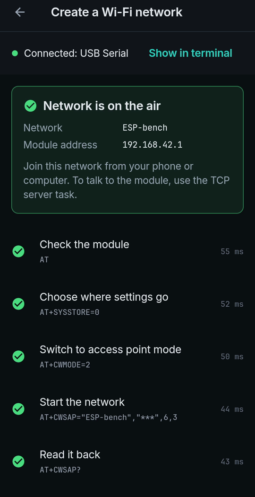

Make an ESP module broadcast its own Wi-Fi network, from your phone
An ESP8266 with AT firmware can create its own Wi-Fi network, so a phone or computer can join it with no router. It takes seven AT commands in the right order. LinkJig sends them for you and checks each reply.
This is a real session: an ESP-01S with AT firmware 2.2.0, connected to an Android phone over USB OTG and a CH340 USB-UART adapter.
Create the network
- Connect the adapter and open your serial device.
- Open the Modules tab, pick ESP8266, then Create a Wi-Fi network.
- Enter a network name and a password of at least 8 characters. Channel 6 and WPA2 are the defaults.
- Tap Create network.

Each step is checked before the next one is sent. The password never appears on screen; it is shown as stars.
The seven commands
19:54:42.563 TX AT
19:54:42.616 RX AT
OK
19:54:42.627 TX AT+SYSSTORE=0
19:54:42.648 RX AT+SYSSTORE=0
OK
19:54:42.670 TX AT+CWMODE=2
19:54:42.696 RX AT+CWMODE=2
OK
19:54:42.721 TX AT+CWSAP="ESP-bench","***",6,3| Command | What it does |
|---|---|
AT | Checks that the module answers |
AT+SYSSTORE=0 | Keeps the next settings out of flash |
AT+CWMODE=2 | Switches to access point mode |
AT+CWSAP="name","password",6,3 | Starts the network: name, password, channel, security (3 = WPA2) |
AT+CWSAP? | Reads the network back |
AT+CIPAP? | Reads the module's own address |
AT+SYSSTORE=1 | Restores the default |
The module answered with its address:
+CIPAP:ip:"192.168.42.1"
+CIPAP:gateway:"192.168.42.1"
+CIPAP:netmask:"255.255.255.0"
OKEvery command and reply also stays in the terminal, so you can see exactly what was sent.
Limits
- Keep after restart was off in this session: the network disappears when the module restarts. Turn it on to save it to flash.
- Recorded with AT firmware 2.2.0. Other AT versions may answer differently.
- The factory address of an ESP8266 network is usually 192.168.4.1. This module had been set to 192.168.42.1 before recording.
- Live-tested with a CH340 adapter on Android 9.
Try it
Watch the demo on YouTube. LinkJig is on Google Play and the Microsoft Store.